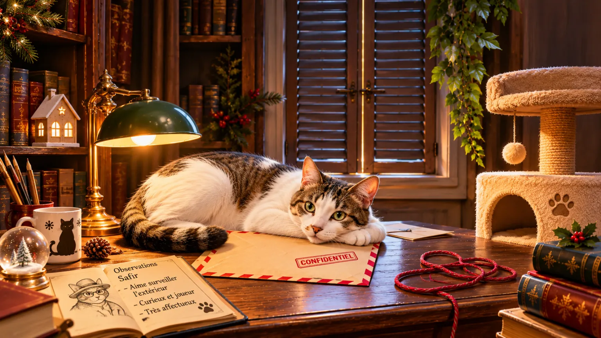

Un occupant non habilité s'est installé sur une pièce du dossier. Le Bureau sollicite votre assistance.

L'archive paraît intacte. Reste à comprendre comment récupérer ce qu'elle contient.
Un objet sélectionné peut servir dans la scène. Touchez une zone pour l'utiliser.
La déclaration de Safir a été récupérée. Son annexe essentielle reste sous scellés jusqu'au rapprochement final avec Rubis.
Fin de cette démonstration. La suite sera intégrée ultérieurement au portail du J24.
La progression de ce test Safir seulement sera effacée. Les sauvegardes du J14, J20 et J24 resteront intactes.